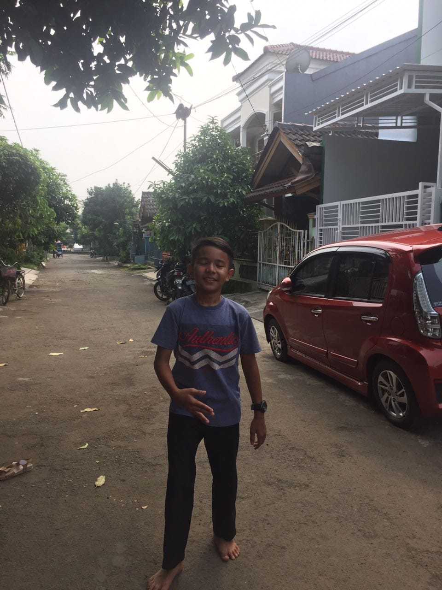
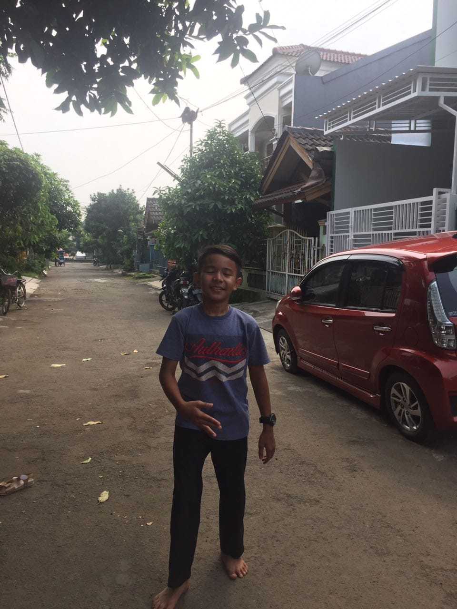

PENDAHULUAN


Sebagian orang menganggap hari kelahiran adalah hari yang spesial, sisanya menganggap hari kelahiran sama seperti hari biasa pada umumnya. Aku tidak tahu bagaimana kamu mendeskripsikan hari kelahiranmu, dan kamu juga tidak perlu memikirkan perspektif orang lain tentang hal itu. Satu hal yang perlu kamu ketahui, aku di sini sangat bersyukur karena kamu ada di dunia yang luas ini. 18 September adalah hari yang selalu aku nantikan setiap tahunnya. tahun ini, tahun depan, dan tahun-tahun berikutnya.
Tepat pada hari ini, dua puluh tahun yang lalu, seorang pria bernama Arya Irfanulloh lahir ke dunia. Dari seorang ibu yang hebat, kamu tumbuh menjadi pribadi yang luar biasa: pekerja keras, cerdas, penuh semangat, dan tetap hangat di hati. Aku sangat bersyukur bisa mengenalmu, berada di sampingmu, dan melihat versi terbaikmu setiap hari.
Dua puluh tahun bukan waktu yang singkat. Tentu tidak mudah bagimu melewati perjalanan hidup ini. antara pekerjaan, kuliah, dan kehidupan sehari-hari. Sudah banyak tantangan dan rintangan yang kamu lewati, tapi juga ada banyak kebahagiaan yang menghampiri. Mungkin kadang kamu merasa masih kurang atau belum cukup, tapi aku di sini akan selalu bangga dengan setiap pencapaianmu, sekecil apa pun itu. Aku selalu di sampingmu, untuk mendukung dan menemanimu.
Untuk masa depan yang kamu impikan, aku berharap selalu ada aku di setiap langkah perjalananmu. Semoga semua hal baik yang kamu rencanakan terwujud dengan indah, dan semua hal indah yang aku harapkan juga hadir bersamamu, yaitu kamu. Semoga selalu ada kata “kita” di perjalanan panjang ini, dan semoga aku bisa terus hadir di setiap hari spesialmu.
Aku percaya bahwa 20 tahun hidupmu bukan hal yang mudah. Banyak usaha, air mata, dan pengalaman yang membentuk siapa dirimu sekarang. Tujuan penulisan ini adalah agar kamu tahu seberapa bangganya aku terhadap semua yang sudah kamu lalui, seberapa berharganya dirimu di hidupku, seberapa besar cintaku untukmu, dan seberapa jauh harapan yang selalu aku usahakan untuk kita. Semoga setelah membaca ini, kamu tahu bahwa ada seseorang yang selalu ada di sampingmu dalam keadaan apapun.
Di kehidupan ini, banyak orang yang bersyukur karena kamu ada: keluarga, teman, rekan kerja, bahkan orang asing yang kamu bantu, dan tentu saja aku. Aku juga sangat bangga karena di tengah kesibukan kuliah dan pekerjaanmu, kamu tetap berani mencoba hal-hal baru, berani menghadapi tantangan, dan terus berkembang. Semoga di perjalanan yang panjang ini, aku bisa menjadi bagian dari setiap langkah, cerita, dan pengalaman baru yang akan kamu lalui.


 
